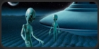

Инопланетяне, гуманоиды,пришельцы ... , иновремяне ...

Инопланетянин — представитель разумной внеземной цивилизации в человеческой культуре. Понятие «инопланетянин» может заменяться также словами «пришелец», «марсианин». Существующее понятие «лунатик» в настоящее время является устаревшим и скорее обозначает человека, больного сомнамбулизмом. По всей видимости, феномен «инопланетянина», как и связанное с ним понятие «Внеземная цивилизация» имеют корнем экзистенциальный ужас человеческого сознания, связанный с осознанием уникальности человеческого разума во вселенной, которую современная наука считает безграничной.В человеческой культуре инопланетянин чаще всего предстаёт в виде гуманоида. Сложился своеобразный «классический» образ инопланетянина как человекообразного существа с дряблым телом, покрытого кожей серого или светло-зелёного цвета, без волосяного покрова и с непропорционально большой головой, на которой находятся огромные раскосые глаза чёрного цвета и миндалевидной формы, без зрачков. Инопланетянин-гуманоид, как правило, отличается прямохождением, выраженными нижними и верхними конечностями, парными внешними признаками, ориентированными по вертикальной оси. Классический образ инопланетянина также характеризуется неочевидным отсутствием у него, как у биологического вида, признаков биологического пола благодаря отсутствию чётко выраженных наружных половых органов и полового диморфизма, поскольку большинство описаний внешности и поведения инопланетян представляет их как существ среднего рода, бесполых и обезличенных.
В подавляющем большинстве случаев в представлении людей инопланетяне — представители цивилизации, которая значительно превосходит землян в технологическом плане.
- | Пришельцы - легенда или реальность.
- | Анатомия Инопланетянина.
- | Ждать ли их вторжения.
- | Человечество — плод инопланетных генетиков.
- | Что, если пришельцы тоже земляне?.
- | Цели визитов.
- | В школе пришельцев.
- | Пришельцы из будущего.
- | Одни ли мы во вселенной?. |
Виды и внешность пришельцев :
- | Классификация пришельцев .
- | Классификация пришельцев по рассказам очевидцев.
- | Останки на берегу Миссисипи.
- | Летающие люди. |
Контакты с пришельцами :
- | В ожидании контакта.
- | Классификация контактов.
- | Половые контакты.
- | После контактов.
- | Контакты в США в 50-е годы.
- | Возможность инопланетной агрессии.
- | Откуда они прилетали ?.
- | Вскрытие пришельца.
- | Похищение.
- | Психическая атака из космоса.
- | Дети-Гибриды.
- | Имплантанты.
- | Похищения детей.
- | Датчики от них.
- | Алло, Земля?.
- | Зачем им наши женщины ? .
- | Инопланетная хирургия .
- | Как начинается контакт.
- | Иновремяне. |
Следы пребывания пришельцев на Земле :
- | Аборигены.
- | Захоронения пришельцев.
- | Гости планеты Земля.
- | Мумии пришельцев.
- | Подробнее о пришельцах.
- | По следам пришельцев.
- | Ветхозаветные пришельцы.
- | Загадочные ритуалы.
- | Древние боги - пришельцы?.
- | Следы в доисторические времена.
- | Ядерная война между землянами и инопланетянами.
- | Тибетское кладбище.
- | Древние предания.
- | Загадочные копи инопланетян.
- | Тайна Великих озер.
- | Инопланетяне и Календарь.
- | Загадка кроманьйонцев.|
Дети Индиго :
Будет рождено множество детей, разбирающихся в электронике и атомной энергии так же хорошо, как и в других видах энергии. Из них вырастут ученые и инженеры нового поколения, в чьих руках будет сила, достаточная для уничтожения цивилизации, — если мы не научимся жить в соответствии с законами духа.
Будет рождено множество детей, разбирающихся в электронике и атомной энергии так же хорошо, как и в других видах энергии. Из них вырастут ученые и инженеры нового поколения, в чьих руках будет сила, достаточная для уничтожения цивилизации, — если мы не научимся жить в соответствии с законами духа.
По материалам книги П.М.X. Этуотер
"За пределами детей Индиго.
Новые дети и наступление пятой эры."
"За пределами детей Индиго.
Новые дети и наступление пятой эры."
- | Вступление.
- | Врата майя.
- | Пятая корневая раса.
- | Пятый мир.
- | Пятая чакра.
- | Марш поколений.
- | Бросить вызов ярлыкам.
- | Хор голосов.
- | Притяжение астрала.
- | Всеобъемлющая духовность.
- | Странный гнев.
- | Пляшущие гены.
- | Потерянный потенциал.
- | Новые пути обучения.
- | Зиппи, Твинс и Мини-ми.
- | Их призвание — менять.
- | Великое изменение.
- | Великие эры.
- | Движение в настоящее.|